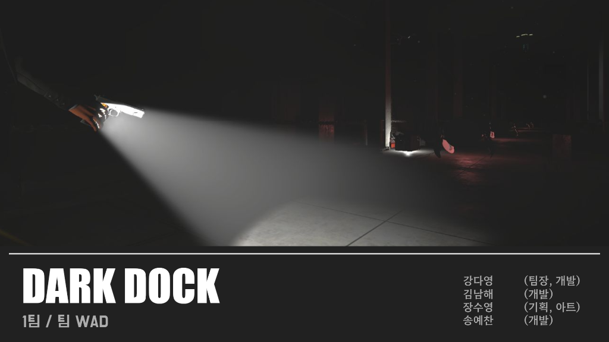
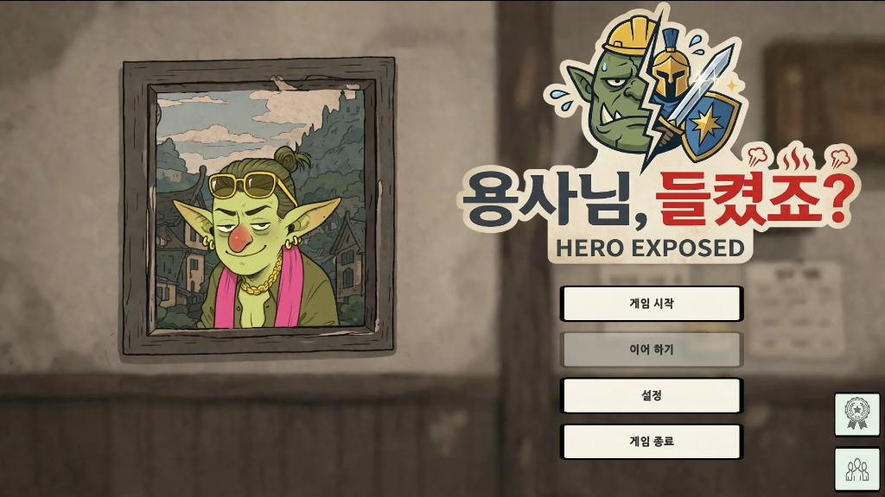
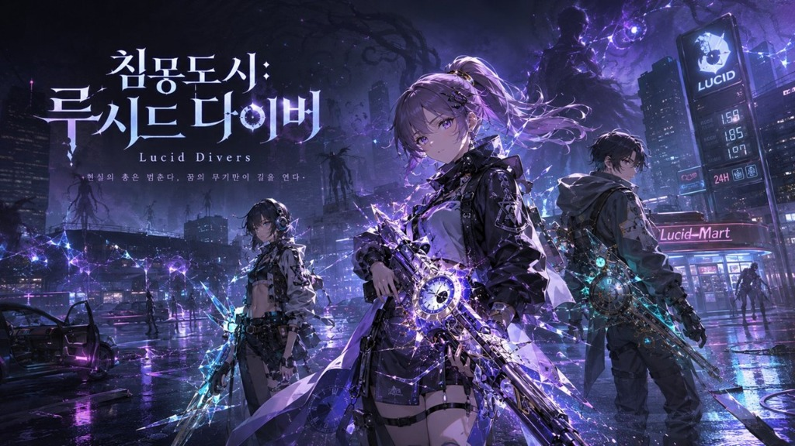

아이디어 기획부터 수치 밸런싱, UI/UX 설계, 사운드 디렉팅, PM 스프린트 관리까지 게임 개발 라이프사이클 전체를 책임지는 올라운더 기획자입니다.
기획자의 성향과 기본 프로필
Game Designer / PM / Graphic
아이디어 제안 단계에 그치지 않고, 시스템 테이블 수치 밸런싱, 와이어프레임 UI 설계, 사운드 에셋 제작 등 개발과 직결되는 모든 상세 사양을 고밀도로 설계합니다. 특히 3회의 연이은 팀 프로젝트에서 전회 기획안 채택(3/3)을 이뤄내며 기획의 설득력과 프레젠테이션, 문서화 능력을 객관적으로 증명했습니다.
개발 프로세스 상의 소통 비용을 줄이기 위해 기획서 외 플로우차트와 시스템 구조도를 직접 명시하며, UI/UX 와이어프레임 설계부터 씬 연출에 필요한 사운드 디렉팅까지 도맡아 게임 콘텐츠의 총체적인 마감 품질을 올릴 수 있는 멀티 롤 역량을 발휘합니다.
프로젝트의 핵심 성공에 기여한 기획 역량
GDD(기획서) 총괄 및 버전 관리. 플레이어 조작, 몬스터 AI 공격 로직, 인벤토리 아이템 규칙 설계 및 플로우차트 제작.
피격 넉백 시간, 이동속도, 가속도, 투척 포물선 힘 계산, 무기 연사력/재장전 연출 프레임 매핑 등 시스템 수치 설계.
피그마 와이어프레임 설계 및 Unity uGUI 인게임 UI 캔버스 빌드. 일러스트 및 아이콘 그래픽 자산의 그래픽 디렉팅.
사운드 믹서 그룹 및 Scene별 사운드 공간 연출 설계. 음원 합성 및 SFX 앰비언트 사운드 제작.
노션 대시보드 구축을 통한 마일스톤 트래킹. WBS(작업 관리), 회의록 작성 및 기획안 최신화(현행화) 주도.
ChatGPT API 연동 추리 게임 프롬프트 설계. 페르소나 매칭, 응답 가중치 및 시스템 메시지 튜닝 (2차 프로젝트).
각 카드를 클릭하면 상세 인터랙티브 포트폴리오 웹페이지로 이동합니다.

2.5D 사이드뷰 호러 서바이벌 게임. 어둠과 안개로 뒤덮인 공장에서 제한된 시야와 아이템 슬롯을 이용해 탈출하는 공포 서바이벌 게임입니다.

마왕물산 OS AI 추리 게임. 가상의 터미널 OS 인터페이스에서 몬스터 직원들의 서류를 대조하고, ChatGPT 대화를 통해 마왕성에 잠입한 용사를 가려내는 추리 게임입니다.

2D 사이드뷰 벨트스크롤 액션 RPG. 현실의 총은 멈춘다, 꿈의 무기만이 길을 연다. 침묵하는 꿈의 도시에서 심층 의식으로 다이브하는 스릴 넘치는 벨트액션 RPG입니다.